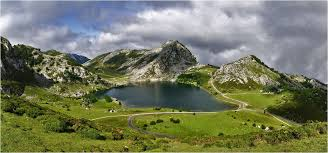
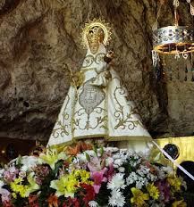

Covadonga (cooficialmente, en asturiano, Cuadonga) es una parroquia del concejo de Cangas de Onís en el Principado de Asturias, España, así como la única población, con la categoría de lugar, de dicha parroquia.
La parroquia incluye el Real Sitio de Covadonga, con su Santuario, y forma parte del Parque Nacional de los Picos de Europa, y en sus 2,54 km² habitan un total de 58 personas.
El lugar de Covadonga está a una altitud media de 257 metros sobre el nivel del mar, en la falda del monte Auseva, y dista unos 11 kilómetros de Cangas de Onís.


Existen dos etimologías propuestas, para el topónimo Covadonga, una que le hace derivar del céltico y otra del latín. De acuerdo al origen celta, Covadonga viene de Cova d'onnica, con el significado de "la fuente de la cueva"; con el derivado *onnika "fuente", del céltico *onna "río", que se puede encontrar en hidrónimos como Güeña y Oña (< *onna), Isongu (< *Isonniko) "fuente del río Is", Trioungu> (< *Trionniko) "tres fuentes", Candongu (< *Kandonniko) "fuente clara", etc. En cuanto a la segunda propuesta, la de su origen en la lengua latina, significaría "Cueva de la Señora" (<s Cova Dominica), haciendo alusión al lugar consagrado a la Virgen de Covadonga; sin embargo, de acuerdo a la evolución de la lengua asturiana, la evolución de Cova Dominica, habría dado el resultado de *Covadominga.
El Real Sitio de Covadonga posee el conjunto monumental más visitado de Asturias. Es un santuario dedicado a la Virgen de Covadonga (La Santina), conmemorativo de la Batalla de Covadonga.
El elemento central del Santuario es la Santa Cueva, donde se encuentra la Capilla-Sagrario con la imagen de la Virgen de Covadonga y la tumba de Don Pelayo. Según la tradición, en este lugar se habrían refugiado don Pelayo y sus hombres durante la Batalla de Covadonga.
Junto a la Santa Cueva se erige el Monasterio de San Pedro, habitado por una comunidad de canónigos. El edificio incluye una casa de ejercicios espirituales.
Cerca de la Santa Cueva y el conjunto monacal se alza la Basílica de Santa María la Real de Covadonga. Ideada por Roberto Frassinelli y levantada entre 1877 y 1901 por el arquitecto Federico Aparici y Soriano, de estilo neorrománico construida íntegramente en piedra caliza rosa.
Casa capitular. Además, en la explanada de la Basílica se encuentran: La Casa Capitular del Monasterio de San Pedro, que consta de la Sala Capitular, una biblioteca y un salón de recepciones. El Museo del Real Sitio de Covadonga. Laestatua de don Pelayo, hecha en bronce por el escultor Eduardo Zaragoza en 1964. La Campanona, campana de tres metros de altura y 4.000 kilos de peso construida en 1900 en La Felguera cuyo escultor fue el italiano Sortini, donada por el Conde Sizzo-Norris y Luis Gómez Herrero. Ganadora del primer premio de la Expo de París. El obelisco con la réplica de la Cruz de la Victoria de 1857, levantado por los duques de Montpensier en el lugar llamado «El Repelao», donde la tradición dice que don Pelayo fue coronado rey.
| Conjunto Monumental del Santuario | |||
| Santa Cueva de Covadonga | Monasterio de San Pedro | Basílica de Santa María la Real de Covadonga | Explanada |
|---|---|---|---|
| El elemento central del Santuario es la Santa Cueva, donde se encuentra la Capilla-Sagrario con la imagen de la Virgen de Covadonga y la tumba de Don Pelayo. Según la tradición, en este lugar se habrían refugiado don Pelayo y sus hombres durante la Batalla de Covadonga | Junto a la Santa Cueva se erige el Monasterio de San Pedro, habitado por una comunidad de canónigos. El edificio incluye una casa de ejercicios espirituales | Cerca de la Santa Cueva y el conjunto monacal se alza la Basílica de Santa María la Real de Covadonga. Ideada por Roberto Frassinelli y levantada entre 1877 y 1901 por el arquitecto Federico Aparici y Soriano, de estilo neorrománico construida íntegramente en piedra caliza rosa | Casa Capitular, Museo del Real Sitio de Covadonga, Estatua de Don Pelayo, Los Campones, El Obelisco |
En la Santa Cueva se hallan los sepulcros de los reyes de Asturias: Don Pelayo Alfonso I, el Católico.
El lago Ercina. El 22 de julio de 1918, con motivo del 12º centenario de la batalla de Covadonga, se crea el Parque nacional de la Montaña de Covadonga, primer Parque nacional de España, que con su ampliación al resto de los Picos de Europa en 1995 pasaría a llamarse Parque nacional de los Picos de Europa. En esta área se encuentra el Macizo Occidental de los Picos de Europa, el macizo más extenso, siendo Peña Santa con 2.596 metros la mayor altitud. En este macizo se sitúan los lagos de Covadonga, nombre que se le da al conjunto del lago Enol y el lago Ercina.